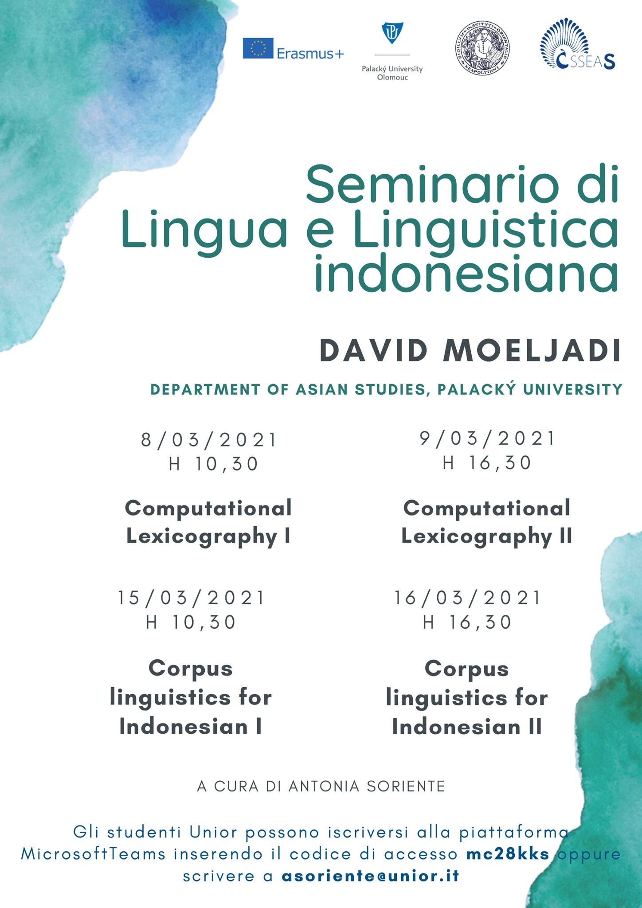

Teaching
Recent courses
- Basic Indonesian grammar for first-year undergraduates
[Tata Bahasa Dasar I-II(b)]
インドネシア語基礎（文法）［学部1年生］
Syllabi and Evaluations (click to toggle)
- Basic Indonesian grammar for second-year undergraduates
[Tata Bahasa Dasar III-IV(b)]
インドネシア語基礎（文法）［学部2年生］
Syllabi and Evaluations (click to toggle)
- Basic Indonesian conversation for first-year undergraduates
[Percakapan Dasar I-II(c)]
インドネシア語基礎（会話）［学部1年生］
Syllabi and Evaluations (click to toggle)
- Basic Indonesian conversation for second-year undergraduates
[Percakapan Dasar III-IV(c)]
インドネシア語基礎（会話）［学部2年生］
Syllabi and Evaluations (click to toggle)
- Basic Indonesian grammar tutorial for first-year undergraduates
[Latihan Tata Bahasa Dasar I-II(e)]
インドネシア語基礎（文法練習）［学部1年生］
Syllabi and Evaluations (click to toggle)
- Basic Indonesian semantics for second-year undergraduates
[Tata Makna Dasar III-IV(e)]
インドネシア語基礎（意味論）［学部2年生］
Syllabi and Evaluations (click to toggle)
- Basic Indonesian reading comprehension for second-year undergraduates
[Membaca (Tingkat Dasar) IV(d)]
インドネシア語基礎（読解）［学部2年生］
Syllabi and Evaluations (click to toggle)
- Advanced Indonesian reading comprehension for third- and fourth-year undergraduates
[Membaca (Tingkat Lanjut)]
インドネシア語総合（インドネシア事情・読解）［学部3、4年生］
Syllabi and Evaluations (click to toggle)
- Advanced Indonesian grammar for third- and fourth-year undergraduates
[Tata Bahasa (Tingkat Lanjut)]
インドネシア語総合（文法）［学部3、4年生］
Syllabi and Evaluations (click to toggle)
- Advanced Indonesian sentence composition for third- and fourth-year undergraduates
[Mengarang (Tingkat Lanjut)]
インドネシア語総合（作文）［学部3、4年生］
Syllabi and Evaluations (click to toggle)
- Introduction to Southeast Asian Linguistics Ⅲ for second-, third-, and fourth-year undergraduates
東南アジア言語概論Ⅲ［学部2、3、4年生］
Syllabi and Evaluations (click to toggle)
- Research seminar for third- and fourth-year undergraduates
研究演習-48（ゼミ）［学部3、4年生］
Syllabi and Evaluations (click to toggle)
- A brief history of the Indonesian language (Introduction to Asia)
インドネシア語の歴史（アジア研究入門）
Syllabi and Evaluations (click to toggle)
- Graduation research supervision for fourth-year undergraduates
(Bimbingan Skripsi)
卒業研究指導［学部4年生］
Graduation Theses (click to toggle)
- 「日本語話者インドネシア語学習者における指示的用法のituと-nyaの誤用傾向の分析」 (An Analysis of Error Patterns of the Deictic Forms itu and -nya among Japanese Learners of Indonesian) (2025)
- 『日本語の形容詞「おいしい」とインドネシア語の形容詞「enak」における意味拡張の違いについて』 (Differences in semantic extension between the Japanese adjective oishii and the Indonesian adjective enak) (2024)
- 「日本語とインドネシア語の敬称の比較－さん、様、Pak、Buを中心に－」 (Comparison of honorifics between Japanese and Indonesian: focusing on San, Sama, Pak, and Bu) (2024)
- 「インドネシア語辞書における日本語借用語の音韻的・意味的変化」 (Phonological and semantic changes in Japanese loanwords in the KBBI Indonesian dictionary) (2024)
- 卒業制作「ドキュメンタリー映像：Tenggelam Dalam Diam翻訳・字幕制作」 (Subtitle Translation of "Tenggelam Dalam Diam" - A Documentary Movie) (2023)
- 「インドネシア語の動詞連続構文の考察」 (A Study of Indonesian Serial Verb Constructions) (2022)
- 「マランの若者のワリカン語に対する愛着と伝承方法の考察」 (A Study of Boso Walikan among Youth in Malang) (2022)
- Basic Indonesian Language for Early Term Training
(前期研修の初級インドネシア語)
- Advanced Indonesian Language for Early Term Training
(前期研修の中級インドネシア語)
- Basic Indonesian Language for Mid-Term Training
(中期研修の初級インドネシア語)
- Introduction to Malay/Indonesian Linguistics
東南ｱｼﾞｱ言語研究4、ｱｼﾞｱ･ｱﾌﾘｶ言語研究B
（マレー・インドネシア語学概論）
Syllabi and Evaluations (click to toggle)
Past courses
- Seminar on Indonesian lexicography and corpus linguistics
